Paid Ad Campaigns
- TikTokTikTok: what we run there
- GoogleGoogle: what we run there
- YouTubeYouTube: what we run there
One set of creator videos, cut for each channel.
For scaling software and app companies
Creators, briefs, uploads, campaigns and reporting in one system that you own, connected to your ad accounts and tracking. You get new ads every week and see which ones turn into paying users.
One set of creator videos, cut for each channel.
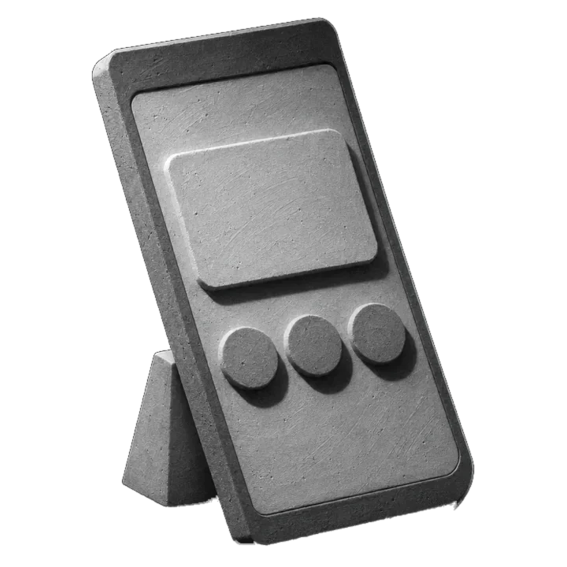
Creators film your app in use. We edit the footage into ads.
A person signs off on each step
AI agents handle the busywork between briefs, footage, drafts and reports.
Briefs and rights live in a spreadsheet.
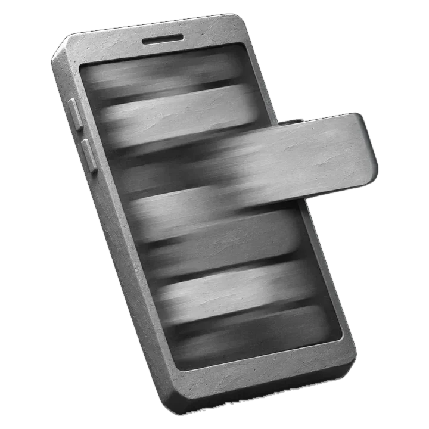
Mismatched ad names hide the winners.
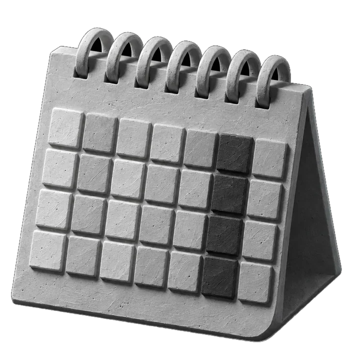
No platform shows you trial-to-paid.
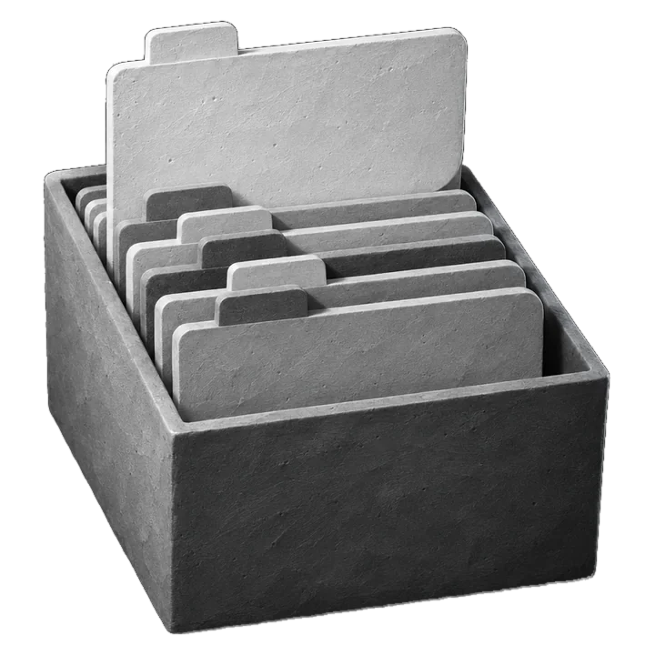
Every creator and video, in your workspace.
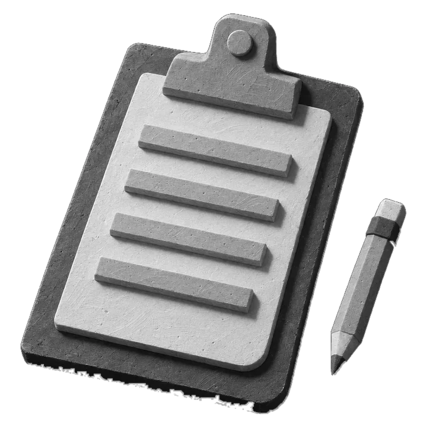
Briefs from your product, reviews and hooks.
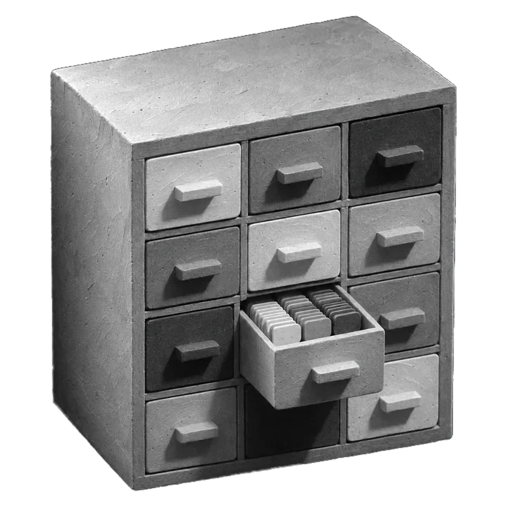
Clips tagged by hook, feature and speaker.
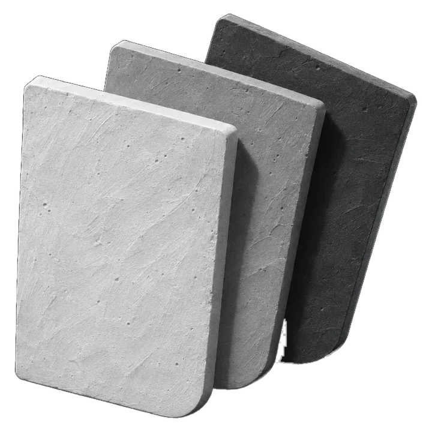
New hooks and captions from your winning ads.
Every ad named and uploaded the same way.
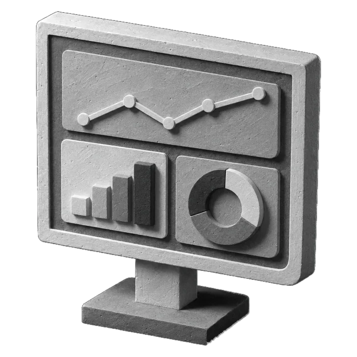
Hook rate to trial-to-paid, per concept.
Shortlists from TikTok One, UGC marketplaces and outreach.
One problem, 2 or 3 openers, one app screen and one CTA.
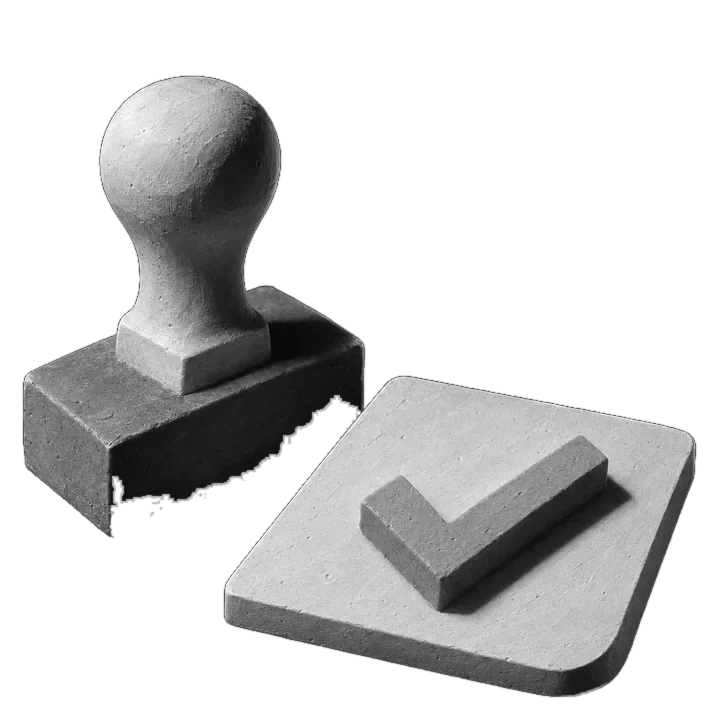
You approve every script before filming and every cut.
Licenses and ad codes logged, renewals flagged early.
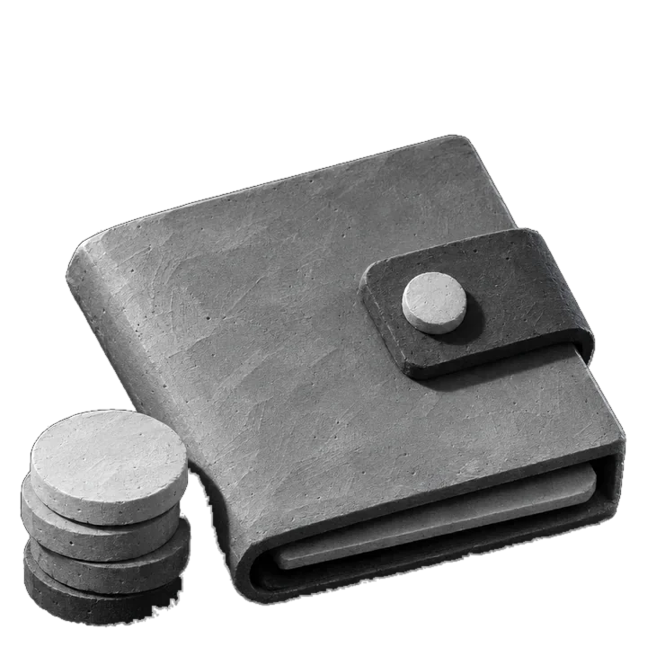
Fees, tax forms and paid dates tracked for every creator.
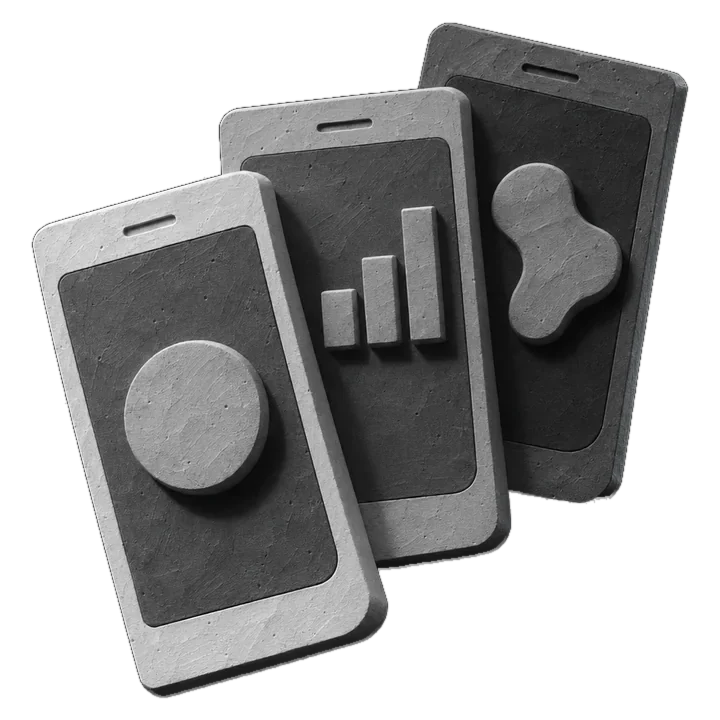
Hook Variants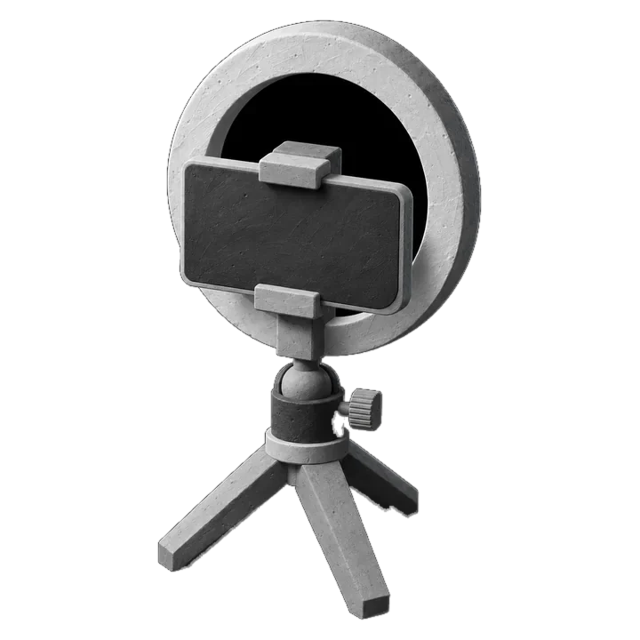
Talking Head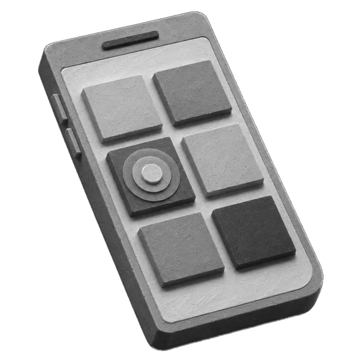
Screen Demo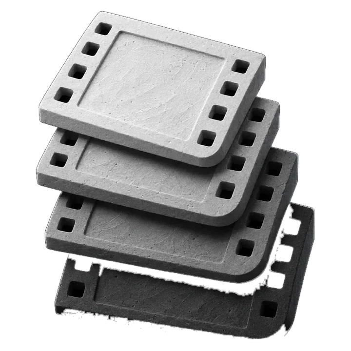
B-roll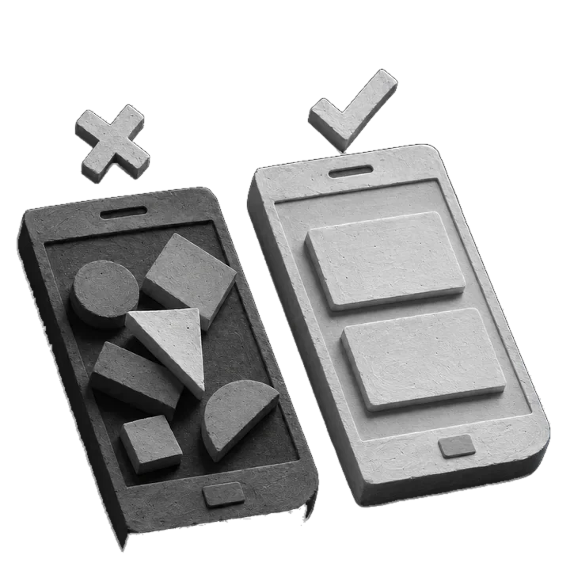
Us vs ThemFacebook and Instagram
Short vertical video
Search, App and Performance Max
Shorts and in-stream
Built automatically every Monday: how your system ran, what performed and what we’re changing next.
Sample numbers, not client data.
Cost per trial fell from $10.00 in week 1 to $7.00 in week 5 and $6.00 in week 6 (sample).
Hooks This Week
| Hook | Hold Rate | Cost per Trial | Scale / Keep / Kill |
|---|---|---|---|
| 1Before and after | 34% | $4.50 | Scale |
| 2Day in the life | 26% | $7.00 | Keep |
| 3Feature tour | 18% | $11.94 | Kill |
We pull apart your ads, tracking, store page and sign-up flow, then pick the channels and the first three tests.
Briefs go out, creators film, we cut the videos you approve, and tracking and campaigns go live.
You get the Monday report. New variants go live, weak ads get paused, and budget moves to the winners.
Each new ad also gets variants cut from your best performers.
Pick every channel you want ads on.
What you spend on the ad platforms each month. You pay them directly.
Your plan
$1,500/mo
Not sure yet? Growth is the middle plan. On the teardown call we size it to your ads and budget.
Billed through Commas. Stop before the next bill and nothing more is charged. You pay ad spend and creator fees directly. Launch code BREZM4 takes 10% off your first payment.
Other plans:&
Founder, BRANDWERX
I run BRANDWERX for software and app companies ready to scale with UGC ads and automated systems that turn attention into paying users.
I build your creator tracker, briefs, upload flow and reporting in your own accounts, so a lean team ships more ads and keeps every asset.
No fixed minimum. Under $3,000 a month we suggest Starter, so each ad still gets enough spend to judge. You pay the ad platforms directly.
You do. Everything is built and run in your accounts, so it stays with you if you stop. Creator usage rights are logged with end dates.
In weeks 2 to 4, after the week 1 audit. Briefs go out in week 2, and the first batch launches once you approve the cuts.
The quote above is a starting point. Tell us before your next 30-day bill and the next month runs on the new plan.
No. You’re billed every 30 days through Commas, and setup happens in month one. Stop before the next bill and nothing more is charged.
We go through your ads, tracking and sign-up flow and list what to test first. You keep that list whether or not you sign up.